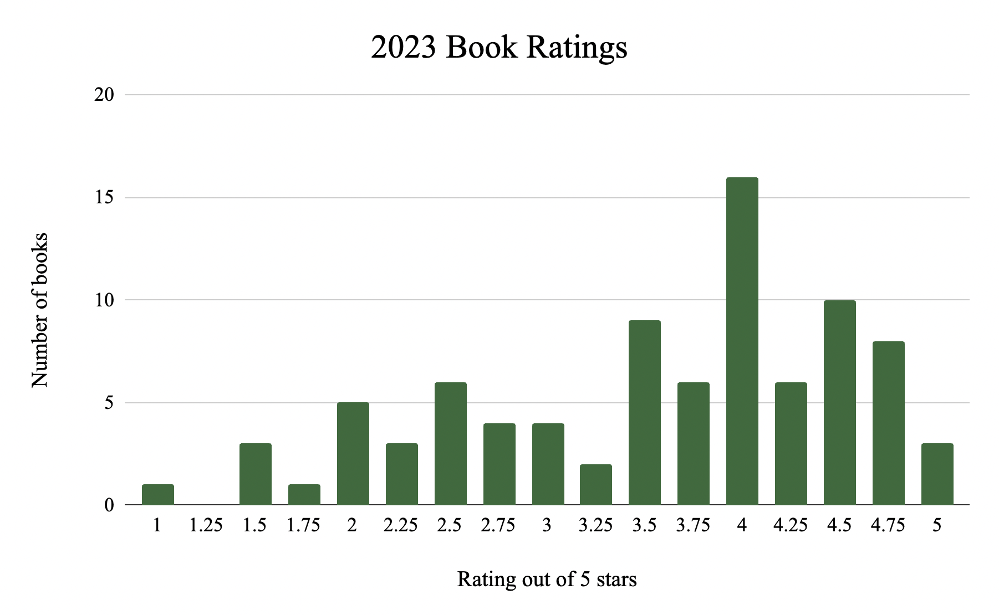

Grace's Favorites
Hello! Welcome to a digital scrapbook of my favorite things!
My name is Grace, and this website is dedicated to the things I love.
My favorite drink is an oat milk latte with honey and cinnamon. I usually drink hot coffee, but this drink is also great iced! I was a barista for a while, and I only learned I liked this drink by experimenting behind the bar. When you have to go to work at a coffee shop at 6 in the morning, you inevitably try a lot of different coffee. I'd love to hear what your favorite drink order is! If there's a story behind it, I'd love to hear that too!
My favorite fruits are cherries of any kind. Usually, I also like cherry flavored things. I have a box of cherry rooibos tea in my pantry right now, and it is spectacular.

My favorite hobby is reading! It's what I spend most of my free time doing. Between majoring in English, reading for pleasure, and working at a bookstore, I read a lot of books. I use the website StoryGraph to track my reading, which is where I pulled this data from.